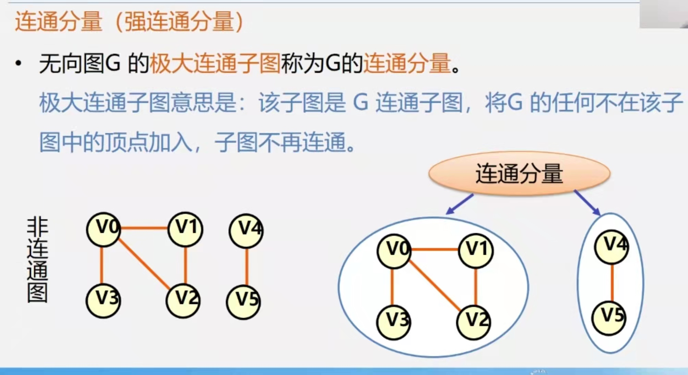

1.外部标签
腾讯
腾讯
2.内部链接
公司简介
公司简介
3.空链接：#
公司地址
公司地址
4.下载链接：地址连接的是文件.exe或者是zip等压缩包形式
下载文件
网页元素链接

目录
1.早年经历
2.演艺经历
3.主要作品
4.个人生活
5.社会活动
6.获奖记录
7.人物评价
8.人物事件
早年经历
刘德华出生于香港新界，在家中排行老四，幼时随家人搬到了九龙钻石山的木屋区居住，并和姐弟一起帮助家里
打理卖稀饭的生意 。1973年，刘德华随家人搬入香港蓝田邨第15座14楼 。刘德华从黄大仙天主教小学毕业后升
读可立中学 。在可立中学读书期间，刘德华积极参加校内学校剧社的表演，在老师杜国威的指导下学习戏剧方面
的知识。此外，他还参与包括编剧在内的幕后制作。刘德华在中五会考获得1B3D2E（中文读本A）的成绩。中六
上学期后，他到香港电视广播有限公司的艺员训练班受训，从而开始了演艺之路 。
返回顶部
演艺经历
1981年，时年20岁的刘德华顺利考进第10期无线电视艺员训练班，1982年以甲级优异成绩毕业后任无线电视
台演员。在“香港电台电视部”制作电视单元剧《香港香港》、《江湖再见》里任主角首次演出并获美国电视
节电视剧特别奖。后来在周润发主演的《鳄鱼潭》里演一个杀手，并且获得周润发的鼓励。
返回顶部
主要作品
我们的刘德华 2012
道地极品玄米茶 2011
悟 2011
忘不了的 2010
长途伴侣 2009
返回顶部
个人生活
家庭
刘德华的父亲刘礼在启德机场做过消防员的工作。20世纪60年代，刘礼开了一间小吃杂货店以赚钱维持家用。
刘德华在家中还有三位姐姐，一位妹妹以及一位弟弟（刘德盛）。
感情
1986年，刘德华随香港明星足球队赴吉隆坡时，结识了朱丽倩。2008年6月23日，刘德华与朱丽倩在美国拉
斯维加斯注册结婚 。2012年5月9日，刘德华的妻子朱丽倩生下一个女儿[29]。 2016年3月，刘德华的妻子朱丽
倩怀上第2胎。
学历
2017年12月14日，刘德华获香港树仁大学颁予荣誉文学博士
返回顶部
社会活动
华仔热衷公益慈善刘德华慈善基金会1994年正式成立，乃政府认可之慈善机构[30]，从来没有公开募款，所
以刘德华基金会并没有跟着刘德华的影响力而被大众知道，累计行善数百起，随着汶川地震的行善，这一基金会
才被人渐渐知道。1991年，华东水灾，刘德华捐款500万。1999年9月24日，刘德华、梅艳芳、张学友前晚出席
中视《伸出你的手，九二一震灾捐款》，合唱《月亮代表我的心》一曲筹3000万善款。2001年，上海演唱会上就
将150万元演出收入作为慈善捐款捐献给艺术节组委会。2001年，内蒙古自治区遭受百年一遇的雪灾刘德华筹得
首批捐助，约合40万元的2000件天蚕衣。
返回顶部
获奖记录
2016 第16届中国电影华表奖优秀男演员 《失孤》 （获奖）
2013 第46届西班牙锡切斯电影节最佳男主角 盲探 （获奖）
2013 第2届香港萨兰托国际电影节（SIFF）Salento Actor Award 桃姐 （获奖）
2012 第6届亚洲电影大奖最受欢迎男主角 桃姐 （获奖）
返回顶部
人物评价
刘德华刘德华被评价为戏演得好，歌唱得好，人品更好；他的勤奋与敬业在娱乐圈也是非常突出，被誉为是
全香港的勤奋的象征。他热爱慈善，从开始的配合宣传做善事，到真心助人，再到为善不欲人知，刘德华在演艺
事业取得成功的同时，对慈善的上心也是被很多人所知的，尤其在每次赈灾活动的现场，他会是带头献演或捐款
，爱心行动也没有停过，参加各种捐款、义演及筹款等，在两岸三地称为“带头大哥”。此外，刘德华默默支持关
爱残疾人，连续两次被选为中国残疾人协会副理事长，他也非常热爱残疾人事业。
返回顶部
人物事件
2017年1月17日在泰国坠马，导致骨盆撕裂伤和肌肉拉伤，住院50多天后，3月10日出院回家。[42]7月28日
，治疗休养半年带着新电影回归荧幕，宣布复出。2018年12月29日，刘德华在红馆举行一连20场《My Love An
dy Lau刘德华World Tour》跨年演唱会，12月28日第14场，刘德华因失声而中途腰斩演唱会，刘德华激动流泪
向观众道歉。
返回顶部